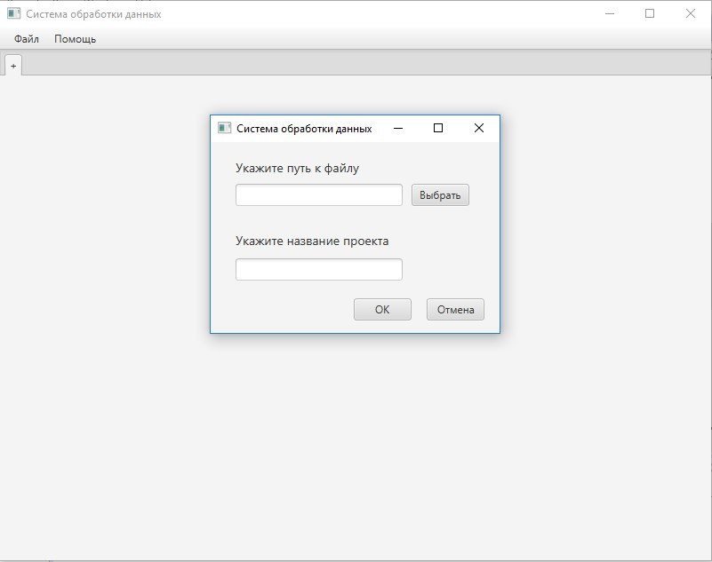

Проект создается на основе выборки данных из файла Excel. При создании нового проекта необходимо придумать ему имя и указать путь к файлу в файловой системе. Интерфейс создания нового проекта показан на рисунке 2.
Рисунок 2. Создание нового проекта
При нажатии на пункт меню «Сохранить проект», открытый проект будет сохранен в базу данных, после чего его можно будет открывать при помощи пункта меню «Загрузить проект».